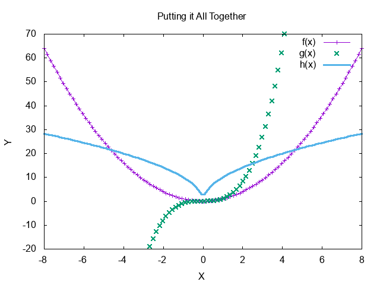
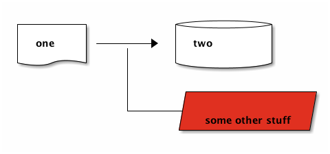

Org-Mode, Babel and Literate Programming
Table of Contents
1 Org-Mode
1.1 What is org?
Org aims to organize you. Your notes, your tasks, your planning, all is handled best in Org.
Org often gets confused with a markup langauage. In reality it is a (major) 'mode'. To those unfamiliar with Emacs a 'mode' defines the interaction aspects of a buffer. Every buffer has a single major mode and then as many minor-modes as the user desires. For example, to edit Web files Web-Mode can be used as the major mode (this would give you syntax highlighting, auto-completion support, etc), if Emmet support is also wanted, Emmet-mode (a minor mode) could then be turned on as well.
While many online services like github bitbucket are supporting '.org' files and displaying them correctly, this is only half the picture, the other part is the interaction environment itself.
1.2 As a markup language.
Org has everything markdown has to offer such as:
- Unordered lists (such as this one)
- Ordered lists
- Headlines
- Links
1.3 And beyond
Org offers the concept of Todo's
1.3.1 Todos task_management
1.3.2 Checkboxes
[ ]any item in a plain list can be turn into a checkbox[ ]these can be interacted with using C-c C-c
1.3.3 Tables
So these aren't impossible to create in Markdown, but the auto-formatting and spreadsheet capabilities are next-level. Simply type '|'between columns and hit <TAB> upon row completetion. Let's look at these as spreadsheets:
1.3.4 Spreadsheets
C-c ? - Show coordinates C-c } - Show Grid C-c C-c - recalculate value (point over formula)
| Name | Age |
|---|---|
| Julian | 30 |
| Paul | 34 |
| Charles | 42 |
| Total | 106 |
1.3.5 Tags
Words enclosed between : : on a headline are tags for that headline. For example, I have tagged 'Todos' and 'Checkboxes' with 'taskmanagement'.
1.4 Navigating and narrowing Org files
Tab folds and unfolds content. C-M variants of emacs navigation commands work across headline items.
Sparse trees can be generated to narrow down to the information you need using C-c /.
1.5 Why?
Lastly, let's discuss why you might want to use this for notes. Project planning gets to remain in a plain-text format while providing the interactivity that other software uses as far an engaging with it. Why does plain text matter? Version control. Plain and simple. Project planning evolves as much as code does yet documents that are commonly 'google drive' docs/sheets don't hold their history in the same way, don't get commit logs and versioning is often hand-documented.
2 Org-Babel
2.1 What is org-babel?
Org babel allows the inclusion of source code blocks in your org file. This isn't that same as enclosing code between 3 backticks as in Markdown, that merely displays code properly. Babel blocks are more like portals to other 'major-modes' that house actionable code.
function factorial (n) { function fact(n, acc) { if (n < 2) { return acc; } else { return fact(n-1, n * acc); } } return fact(n, 1) } console.log(factorial(5))
pressing C-c C-c in the above block actually runs and evaluates that code
'tangling' allows the blocks to be exported together. 'exporting' allows single blocks to dictate where they live (generated by org). variables can be used in each block and across block. And results from one block can be passed to one another.
3 Literate Programming
Furthur discussing org-babel is better suited with context.
3.1 What is literate programming?
Literate programming is a programming paradigm introduced by Donald Knuth in which a program is given as an explanation of the program logic in a natural language, such as English, interspersed with snippets of macros and traditional source code, from which a compilable source code can be generated.
That's the boring definition and I'd be hard-pressed to find someone who would want to wrap their entire codebase in narrative prose. Let's take about where Org really shines, README's for project configuration.
3.2 Literate README's
Many readmes include steps the developer has to take to get up and running. Lets take a look at the most common of these. How many times have you seen, clone the repo and run yarn… Now imagine the following:
Run the following command in shell by typing C-c C-c
yarn
Notice that we also get output in the document. Othertimes README's may describe an API, or describe some endpoints. Forcing you elsewhere to actually test those endpoints.
Lets take a look at the following:
Press C-c C-c in the following block to execute the people API endpoint. Note the ID passed to 'people' that specifies which person (1, Luke Skywalker)
GET https://swapi.co/api/people/1
Here the results of that fetch are piped in as a variable to the next block.
console.log(JSON.parse(data.slice(data.indexOf('{'), data.lastIndexOf('}') + 1)).name);
The above block could be parsed in any babel-supported language, fed to any babel-supported language etc…
3.2.1 Languages of interest
- js - javascript
- shell - your default shell
- ob-mongo - execute mongo queries in a code block
- ob-typescript
- ob-sql-mode
- ob-browser - render html as images inline
- gnuplot (from above) can be used as a language instead, allowing insertable results

- artist mode - can be used if the src is meant to be ASCII for notetaking purposes
this doesnt need to be evaulated, ANY language is support re: display and 'mode' interactions
- plantuml mode - allows the creation of diagrams. the end result is both a nice visual representation and the ability to keep the document in question text-based.
- ditaa
